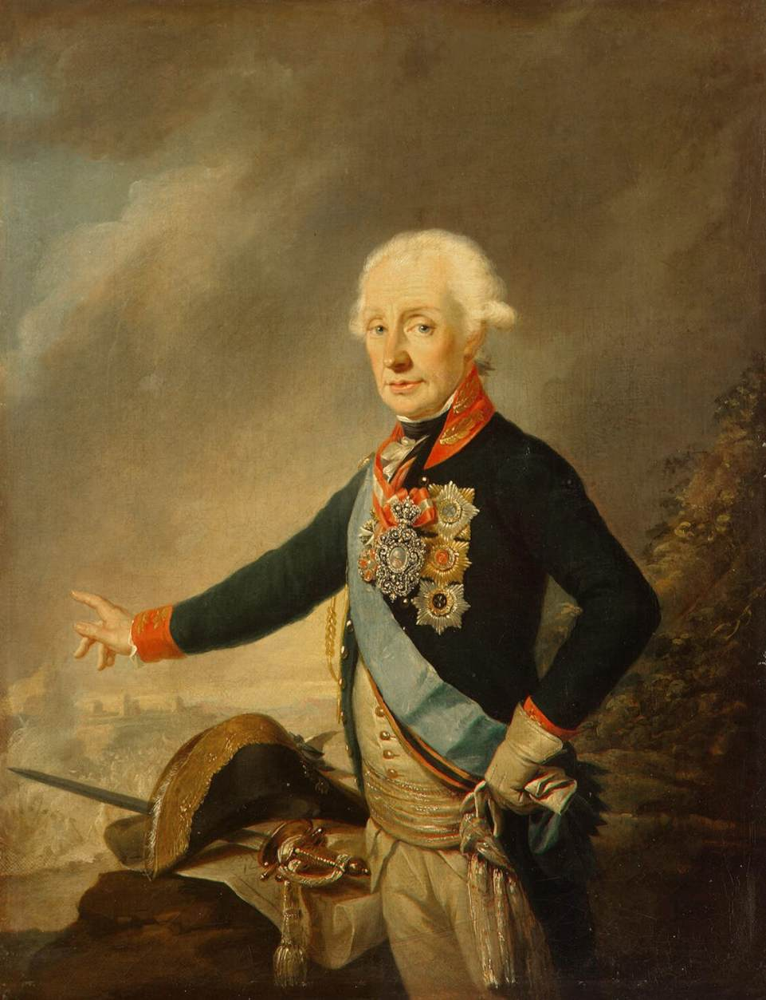
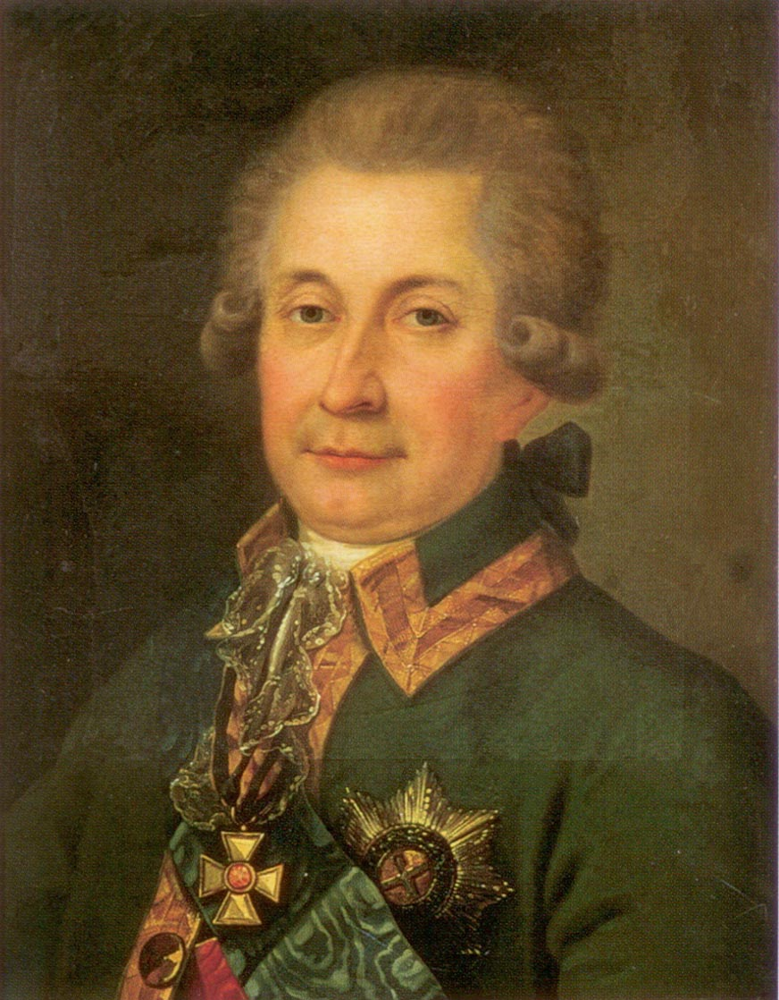

ПЛАН КАМПАНИИ И ЧИСЛЕННОСТЬ ДУНАЙСКОЙ АРМИИ
В начале кампании 1773 года Екатерина II настаивала на активных действиях против армии великого визиря, рассчитывая быстро завершить войну. Императрица полагала, что Очаков можно будет получить при заключении мира в обмен на Бендеры, и поэтому активные действия против крепости не планировались. В это время 1-я армия имела средства для переправы через Дунай. Однако Румянцев предпочитал продолжать тактику набегов малыми отрядами, ссылаясь на недостаточную численность пехоты и наличие угрозы со стороны Очакова.
Численность 1-й армии в марте 1773 года составляла 71,6 тыс. солдат, включая 34 пехотных и 22 кавалерийских полка. Однако в госпиталях находилось 6 тыс., 4,6 тыс. были в отлучках, а 6,1 тыс. — в Речи Посполитой. Таким образом, в Дунайских княжествах насчитывалось около 54,9 тыс. здоровых солдат, включая 5,6 тыс. донских и 2 тыс. запорожских казаков. Румянцев разделил армию на четыре части, которые были размещены в разных районах: в Молдавии, Валахии, Измаиле и Браилове.
С началом весны 1773 года на Дунае возобновились активные действия. Русские и турецкие войска вели «малую войну», проводя рейды и нападения друг на друга. Авангарды русских под командованием Кличка, Дурново и Суворова добились значительных успехов, захватывая крепости и наносив поражения турецким отрядам. Потери турок в этих столкновениях были значительными, в то время как потери русских оставались сравнительно небольшими.

Александр Васильевич Суворов
ПЕРВОЕ НАСТУПЛЕНИЕ
В мае 1773 года Румянцев предпринял переправу через Дунай, сосредоточив в урочище Гуробал 28,5 тыс. солдат, включая пехоту, кавалерию и казаков. Армия Румянцева, преодолев сопротивление турок, начала наступление на Силистрию. Однако из-за подхода корпуса Нуман-паши с 20 тыс. солдат Румянцев счёл расположение своих войск неудобным и отступил на восток от крепости. Несмотря на это, корпус под командованием Вейсмана одержал победу над Нуман-пашой, разгромив его армию и захватив значительное количество артиллерии. Эти успехи укрепили позиции русских, но из-за истощённости войск и нехватки продовольствия армия вернулась за Дунай.
.jpg)
у города Силистрия в июне 1773 года.
ВТОРОЕ НАСТУПЛЕНИЕ
В октябре 1773 года Румянцев снова организовал наступление. План предполагал отвлечение основных турецких сил бомбардировкой Силистрии и Рущука, в то время как корпус Глебова переправлялся в Гуробал, а дивизии Унгерна и Долгорукова должны были занять Карасу и Базарджик. Наступление началось успешно: турки потеряли тысячи убитыми, пленные и артиллерия стали добычей русских. Однако попытка взять Варну была отбита, что привело к потере инициативы. Румянцеву пришлось отступить из-за погодных условий и недостатка продовольствия.

Юрий Владимирович Долгоруков